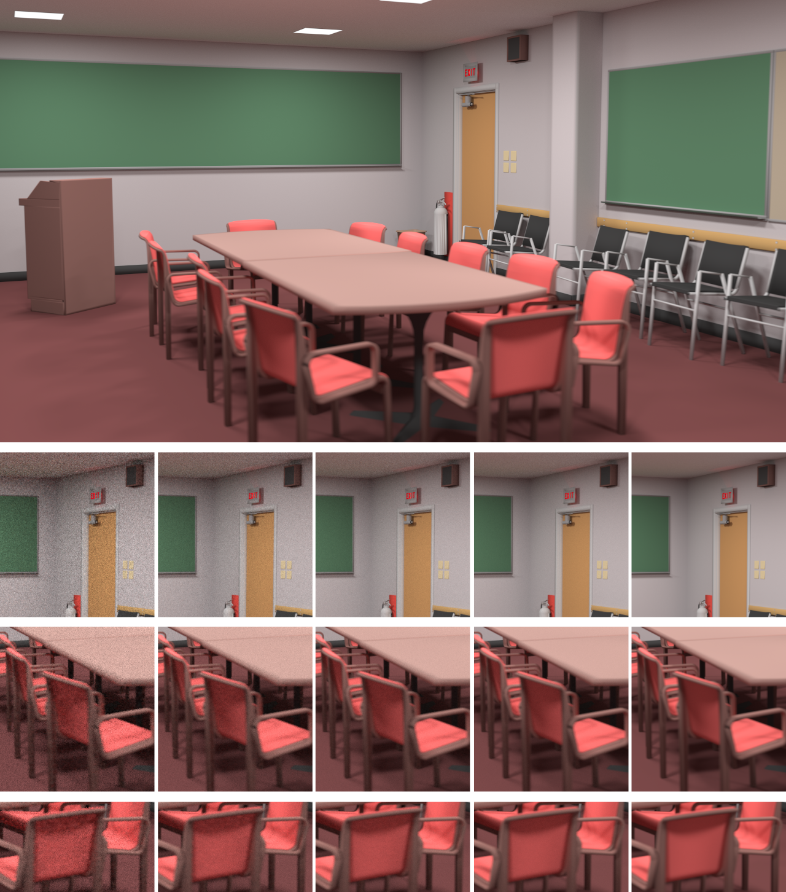
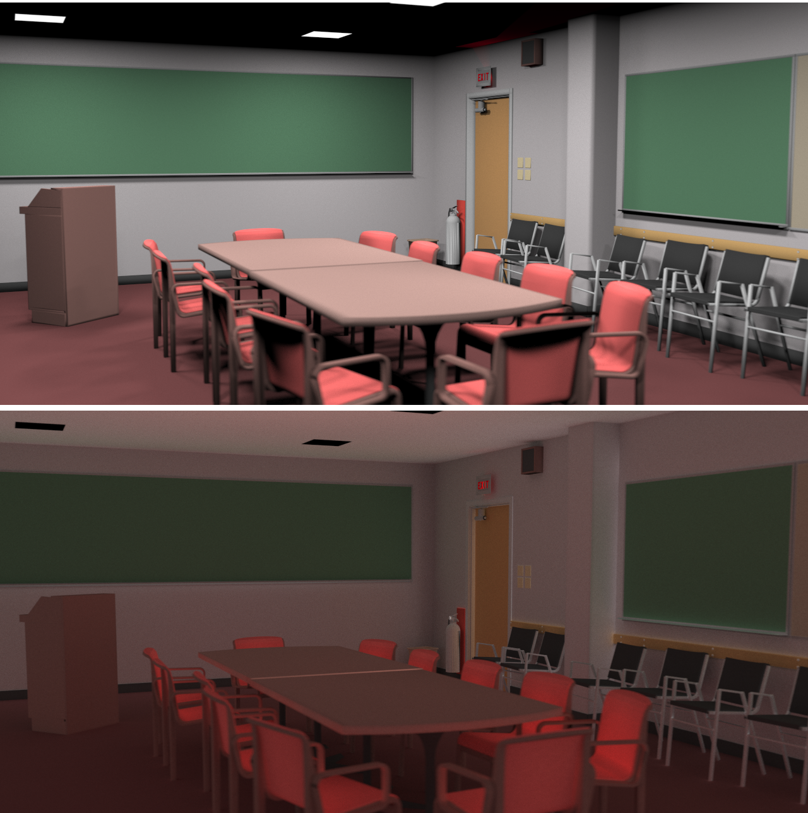

Image rendered using Opposite Renderer with slight depth-of-field. Large image: 45 500 iterations of progressive photon mapping, using 2 Nvidia GTX 480 for 4 hours. 1024*1024 emitted photons per iteration. Small, left to right: 10, 50, 200, 1000 and 45 500 iterations. 1000 iterations in about 1m45s on 6 GTX 480.
Models downloaded from Morgan McGuire's Computer Graphics Archive http://graphics.cs.williams.edu/data. Some fixes are done (moved/added geometry and fixed normals).
Download this scene (as a zipped .DAE) (as a zipped .Blend)

Top image: only direct lighting. Bottom image: Only indirect lighting (multiplied by surface BRDF).
